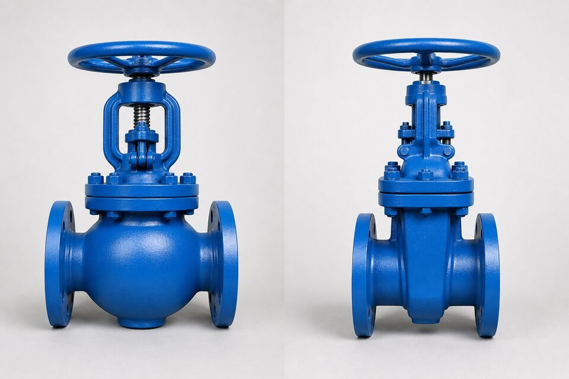

چرا این مقایسه مهم است؟
گلوب و گیت هر دو از شیرهای خطیاند و از نظر ظاهر در سایزهای کوچک شبیه به هم به نظر میرسند؛ اما فلسفه طراحی آنها کاملاً متفاوت است. گیت برای باز کردن کامل مسیر ساخته شده و گلوب برای کنترل جریان. انتخاب اشتباه، خود را به شکل افت فشار غیرمنتظره، سایش زودرس یا ناتوانی در کنترل نشان میدهد. این مقایسه به شما کمک میکند برای هر نقطه از خط، شیر درست را انتخاب کنید و در استعلامها مشخصات را شفاف بنویسید.

شیر گیت؛ باز کردن کامل مسیر
در شیر گیت، یک گوه تخت به صورت عمودی از مسیر جریان عبور میکند و در حالت باز، هیچ مانعی بر سر راه سیال باقی نمیماند. این ویژگی، افت فشار را در حالت باز به حداقل میرساند و گیت را برای نقاطی که شیر یا کاملاً باز است یا کاملاً بسته، ایدهآل میکند. نقطه ضعف گیت در وضعیت نیمهباز است: گوه نیمهباز در معرض جریان، ارتعاش میکند، سایش غیرقرجنس میگیرد و آببندی خود را از دست میدهد. به همین دلیل در هیچ مشخصهای، گیت به عنوان شیر تنظیم معرفی نمیشود.
شیر گلوب؛ کنترل در مسیر
در شیر گلوب، جریان باید از یک مسیر خمیده عبور کند و دیسک به صورت عمود بر نشیمنگاه بالا و پایین میشود. این هندسه، کنترل دقیقتری بر جریان میدهد و حتی در باز شدنهای کوچک، رفتار قابل پیشبینی دارد؛ به همین دلیل گلوب انتخاب طبیعی نقاطی است که نیاز به تنظیم دارند. بهای این قابلیت، افت فشار ذاتی بیشتر است؛ پس در خطوطی که افت فشار محدودیت طراحی دارد، استفاده از گلوب باید با محاسبه هیدرولیکی تایید شود.
جدول مقایسه
| معیار | گلوب | گیت |
|---|---|---|
| هدف اصلی | قطع/وصل و تنظیم | فقط قطع/وصل |
| افت فشار در حالت باز | زیاد | بسیار کم |
| مسیر جریان | دو تغییر جهت | مستقیم |
| قابلیت تنظیم | خوب | نامناسب |
| آببندی نشیمنگاه | دقیقتر | خوب |
| زمان باز و بسته شدن | کمتر | بیشتر |
| قیمت نسبی همسایز | بیشتر | کمتر |
مقایسهای فشرده برای تصمیم اولیه؛ جزئیات هر مورد در بخشهای قبل آمده است.
راهنمای انتخاب برای هر نقطه
- نقاطی که شیر همیشه باز یا بسته است: گیت.
- نقاط نیازمند تنظیم جریان: گلوب یا شیر کنترل.
- خطوط با محدودیت افت فشار: گیت.
- نقاطی با سیکل کاری بالا: گلوب.
- خطوط پیگرو: گیت با عبور کامل.
- نقاطی که هم قطع و هم تنظیم لازم است: گلوب.
اشتباههای عملیاتی و نگهداری مشترک
با وجود تفاوت ساختاری، شیرهای گیت و گلوب در بهرهبرداری چند اشتباه مشترک دارند که آگاهی از آنها عمر هر دو خانواده را افزایش میدهد. اول، استفاده از شیر در وضعیت نیمهباز برای کنترل دبی در شیرهای گیت است؛ دیسک گیت برای این کار طراحی نشده و جریان نیمهباز، لرزش و فرسایش سریع دیسک و نشیمن را در پی دارد. دوم، بستن شیر با نیروی بیش از حد در پایان کورس است؛ در شیرهای گیت، فشار دادن بیش از حد دیسک به نشیمنها، هم سطوح را دفرمه میکند و هم باز کردن بعدی را دشوار میسازد. سوم، نادیده گرفتن نشتیهای کوچک از جعبه پکینگ است؛ این نشتیها به تدریج ساقه را دچار خوردگی موضعی میکنند و تعمیر آنها هر ماه پرهزینهتر میشود. در نگهداری دورهای، چند اقدام ساده بیشترین اثر را دارند: عملیات کامل شیر حداقل هر چند هفته یک بار برای جلوگیری از گیر کردن، بازرسی چشمی پکینگ و بدنه از نظر نشتی و خوردگی، و روانکاری رزوههای ساقه در شیرهای دستی. در توقفهای تعمیراتی نیز بازرسی داخلی نشیمنها و ثبت وضعیت فرسایش، مبنای برنامهریزی تعمیر یا تعویض را فراهم میکند. شیرهایی که این برنامه ساده نگهداری را دارند، معمولا چند برابر شیرهای بیتوجه عمر میکنند.
برای شیرهایی که در مسیرهای دارای ذرات جامد نصب هستند، شستوشوی خط قبل از عملیات طولانی شیر را در دستورالعمل بهرهبرداری بگنجانید؛ تجمع ذرات در ناحیه نشیمن، عامل اصلی نشتیهای تدریجی و سخت شدن حرکت است.
جمعبندی
گیت برای باز کردن مسیر و گلوب برای مدیریت جریان ساخته شده است. با تعریف دقیق نقش هر نقطه از خط، انتخاب بین این دو ساده میشود و از هزینههای پنهان افت فشار یا تعمیر زودهنگام جلوگیری میگردد. در استعلام نیز نوع شیر را صریح ذکر کنید تا پیشنهادها قابل مقایسه باشند.
سوالات رایج
کدام شیر افت فشار کمتری دارد؟
شیر گیت در حالت باز کاملاً از مسیر جریان کنار میرود و افت فشار آن نزدیک صفر است؛ شیر گلوب به دلیل مسیر خمیده ذاتاً افت فشار بیشتری دارد.
آیا میتوان از گیت برای تنظیم جریان استفاده کرد؟
خیر؛ گیت برای قطع و وصل طراحی شده و در وضعیت نیمهباز دچار ارتعاش و سایش گوه میشود. برای تنظیم جریان باید از گلوب یا شیر کنترل استفاده کرد.
کدام شیر برای نقاط پرتکرار مناسبتر است؟
گلوب به دلیل ساختار سادهتر نشیمنگاه و قابلیت کنترل بهتر، برای نقاط با سیکل کاری بالاتر انتخاب مناسبتری است.
در استعلام چگونه تفاوت را مشخص کنیم؟
با ذکر نوع دقیق (گلوب یا گیت)، کلاس، متریال و سرویس؛ چون قیمت و زمان تحویل این دو شیر متفاوت است و جایگزینی خودکار آنها ممکن نیست.
مطالب مرتبط
با ذکر نوع، سایز، کلاس و متریال، شیر گلوب یا گیت منطبق با مرجع تست به همراه مدارک عرضه میشود.
مشاهده صفحه محصول ← ثبت RFQ همین محصولتامین این تجهیزات را به پیشرو تجهیز فرتاک بسپارید
شرکت پیشرو تجهیز فرتاک تامینکننده تخصصی تجهیزات صنعتی برای پروژههای نفت، گاز، پتروشیمی، فولاد و نیروگاهی است. برای دریافت پیشنهاد فنی و قیمت، استعلام (RFQ) خود را ثبت کنید تا کارشناسان مهندسی فروش در کوتاهترین زمان پاسخ دهند.
- تامین شیرآلات صنعتیخانواده کامل شیر با گواهی مواد و تست
- تامین تجهیزات صنایع نفت و گازپکیج مواد مطابق وندورلیست